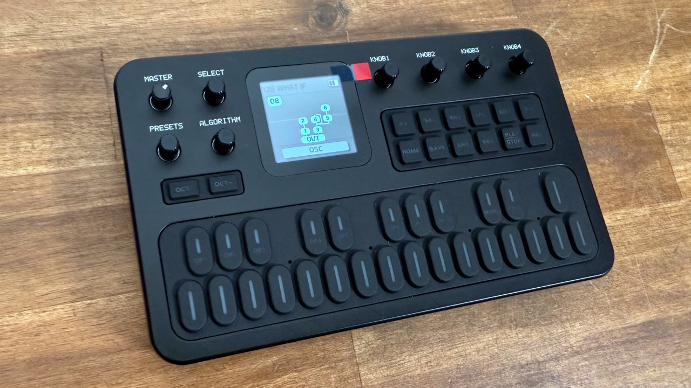
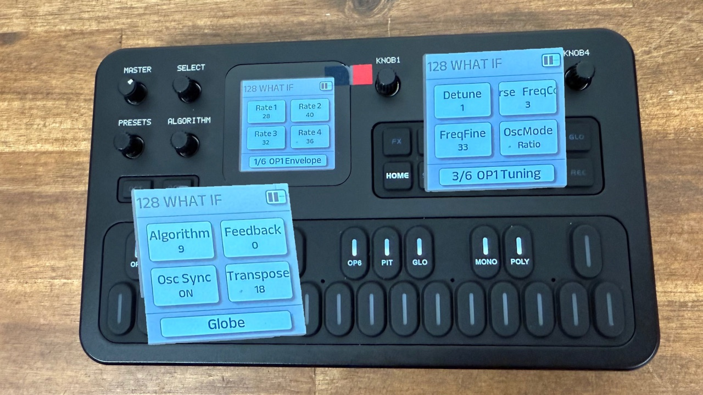

5. EDIT: shaping a voice
Algorithm, operators, pitch EG, voice common, mono/poly
Entering EDIT
Press EDIT. The black keys on the keyboard stop playing notes and become section selectors; their LEDs blink to show they can be pressed.
Press a labelled black key to choose what to edit. The chosen key stays solid.
Black key (left to right) Edits OP1 · OP2 · OP3 · OP4 · OP5 · OP6 Operator 1…6 (6 pages each) PIT Pitch envelope (2 pages) GLO Voice-wide settings: algorithm, feedback, sync, transpose; plus Init/Rename/Copy (2 pages) MONO · POLY Switch voice mode. Active = solid LED, other = blinking The last black key at the right end has no label.
Turn SELECT to flip through that section’s pages, KNOB 1–4 to change the four values.
Press EDIT again (or HOME) to leave. Hold SAVE to keep your changes.
Since V13 each operator remembers which page you were on, and the unit remembers which operator you were editing, so you can hop between OP2 and OP3 without losing your place.
Algorithm

You can change the algorithm at any time, in any mode, by turning ALGORITHM. A diagram appears for a second. The same value is also on the first EDIT → GLO page.
Look at the picture before you edit operators: it tells you which operators are carriers (volume) and which are modulators (brightness). See all 32 on the reference page.
Operator pages OP1–OP6

Each operator has six pages, flipped with SELECT (1/6 … 6/6). All six operators have identical pages. The footer shows e.g. 1/6 OP1 Tuning.
The V15 manual and M-VAVE’s own page table agree on the order below. Some V14-era photos and older manuals show Envelope first and Tuning third. If your unit is on V14 or older, the order of pages 1–3 may differ.
Page 1: Tuning & Level
- K1 Detune −7…+7. Tiny pitch offset in cents-like steps. Use it to thicken (detune a copy of the same ratio).
- K2 FreqCoarse 0–31. The ratio’s whole part (0 = ½).
- K3 FreqFine 0–99. The decimals of the ratio.
- K4 OutLevel 0–99. For a carrier = volume; for a modulator = brightness.
Page 2: Envelope (rates)
- K1–K4: Rate 1 … Rate 4, each 0–99. Higher = faster.
R1 is the attack speed, R2 and R3 are the following stages (usually a decay), R4 is the release speed after you let go.
Page 3: Env Level
- K1–K4: Level 1 … Level 4, each 0–99. Where each stage ends.
L3 is the level held while the key is down (sustain). L4 is the level after release, normally 0 = silent.
Set L1 high, L2 medium-low, L3 low or 0, with R2 fairly fast. The sound hits and dies away like a plucked string even when you hold the key.
Page 4: Sens (sensitivity & mode)
- K1 AmpMod 0–3. How much the LFO’s amplitude wobble (AMD) affects this operator.
- K2 Key Velo 0–7. How much key velocity changes this operator’s level.
- K3 OscMode Ratio or Fixed. Ratio follows the keyboard; Fixed stays at one frequency whatever key you press.
Page 5: Scaling
- K1 L Depth 0–99. How much the operator’s level changes for keys below the break point.
- K2 R Depth 0–99. Same for keys above it.
- K3 BreakPoint A-1 to C7. The note where the two sides meet.
Page 6: Curves
- K1 L Curve and K2 R Curve: the shape of the scaling on each side:
−LN,−EX,+LN,+EX(LN = linear, EX = exponential). - K3 RateScale 0–7. How much envelopes speed up on higher notes.
On the DX7, “−” makes that side quieter and “+” louder as you move away from the break point; the FM-1 manual does not spell this out.
The footer text on pages 2, 3, 5 and 6 (Envelope, Env Level, Scaling, Curves) is how this guide’s reference app names them. The manual only names them by content. Photos confirm “Envelope” and “Tuning”.
Muting an operator
While in EDIT, long-press an OP key (OP1–OP6) to mute that operator, which is a quick way to hear what each operator contributes. Audio returns when you switch to another voice (that is how you un-mute).
A third-party firmware manual reports that on stock firmware the mute was “mirrored” (OP1 muted OP6, and so on). This was not confirmed by M-VAVE. If the wrong operator goes silent on your unit, that is why.
PIT: the pitch envelope
PIT is a four-stage envelope for the pitch of the whole voice: it starts at one pitch and slides to another when you press a key. Subtle values give a fingerprint of “real” instruments; large values give pitch drops for drums, zaps and plucks.
- Page 1: Rate 1–4 (0–99).
- Page 2: Level 1–4 (0–99).
On the DX7, level 50 means “no change from the note pitch”, higher is sharper and lower is flatter. With every level at 50 the pitch envelope has no effect, which is the default.
The FM-1 manual lists the range as 0–99 but does not say what value means “no change”. 50 is the DX7 standard.
GLO: voice common settings
Press EDIT, then the black key GLO. This section holds settings that apply to the whole voice. Do not confuse it with the GLO button, which holds device-wide settings (page 9).
Page 1
- K1 Algorithm 1–32 (same as the ALGORITHM knob).
- K2 Feedback 0–7. How strongly the feedback operator modulates itself.
- K3 Osc Sync On/Off. On = each operator’s waveform restarts at the same point for every note, so the attack is consistent. Off = free-running, so notes can differ slightly. This is the same parameter that appears on the LFO’s page 2.
- K4 Transpose 0–48. Shifts the voice in semitones; 24 is no shift (48 = two octaves up, 0 = two octaves down).
Page 2: Init, Rename, Copy
Covered in Voices: K1 Init Voice, K2 Rename, K3 Copy Voice.
MONO / POLY
These two black keys switch the voice between playing one note at a time (MONO, last note wins) and up to 12 notes at once (POLY). See Playing.